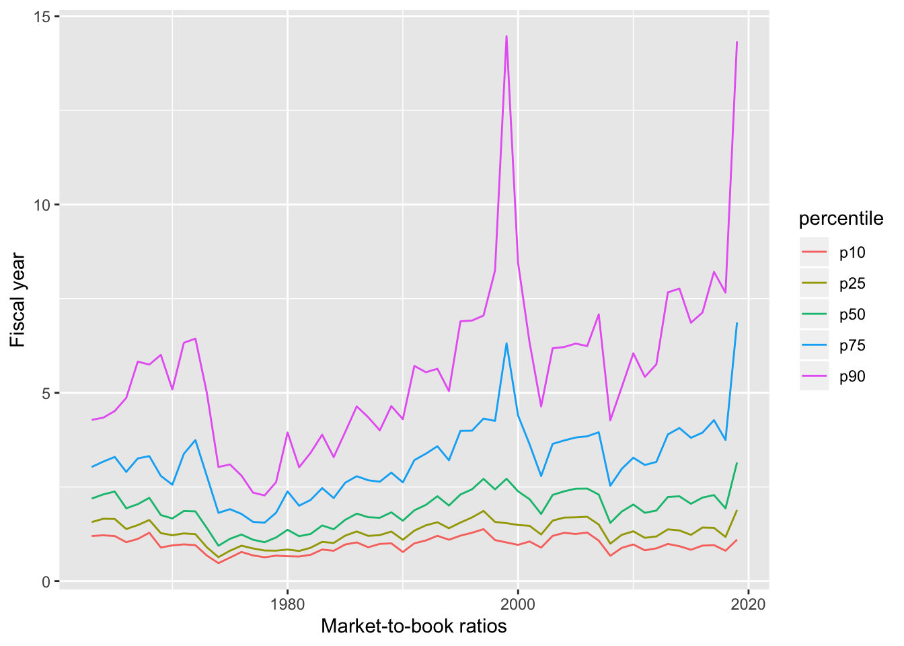
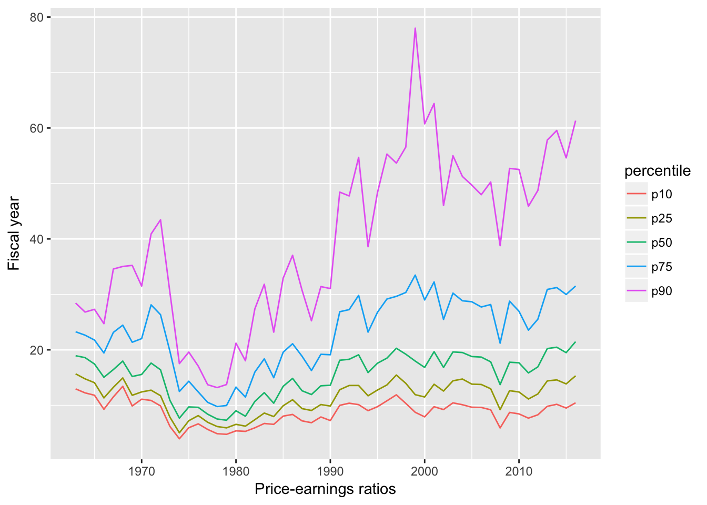

Chapter 2 Performance over time
library(dplyr, warn.conflicts = FALSE)
library(tidyr)
pg <- src_postgres()
funda <- tbl(pg, sql("SELECT * FROM comp.funda"))
comp <-
funda %>%
filter(indfmt =='INDL', datafmt =='STD', popsrc=='D', consol=='C') %>%
mutate(mktcap = prcc_f*csho,
mb = if_else(ceq > 0, prcc_f*csho/ceq),
pe = if_else(epspi >0, prcc_f/epspi)) %>%
filter(mktcap > 200, fyear>=1963) %>%
select(gvkey, fyear, mktcap, mb, pe)
get_quantiles <- function(df, var, quantiles) {
var_str <- substitute(var)
perc_sql = paste0("percentile_cont(quantiles) ",
"WITHIN GROUP (ORDER BY ", var_str, ")")
quantile_sql = paste0("ARRAY[", paste(quantiles, collapse = ", "), "]")
df %>%
mutate(quantiles = sql(quantile_sql)) %>%
group_by(fyear, quantiles) %>%
summarize(value = sql(perc_sql)) %>%
mutate(percentile = unnest(quantiles)*100,
value = unnest(value)) %>%
select(-quantiles) %>%
ungroup() %>%
collect() %>%
mutate(percentile = paste0("p", percentile),
var = as.character(quote(var_str)))
}
quantiles <- c(0.1, 0.25, 0.5, 0.75, 0.9)
library(ggplot2)
get_quantiles(comp, mb, quantiles) %>%
ggplot(aes(x = fyear, y = value, color = percentile)) +
geom_line() +
xlab("Market-to-book ratios") +
ylab("Fiscal year")
get_quantiles(comp, pe, quantiles) %>%
ggplot(aes(x = fyear, y = value, color = percentile)) +
geom_line() +
xlab("Price-earnings ratios") +
ylab("Fiscal year")